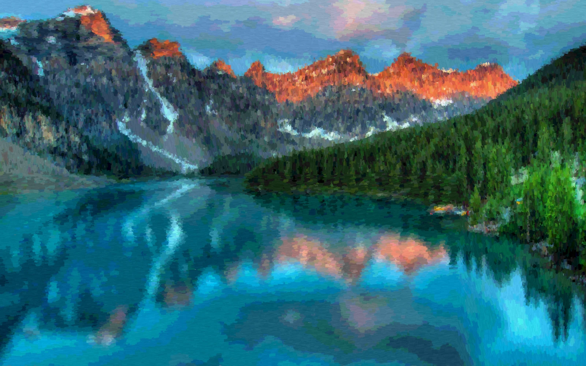

A postcard from
Yash Kalani
Lake Louise, Alberta
Find me in these little corners of the internet.
Until our paths cross again, Yash
A brush painting of sunlit Banff peaks, turquoise lake reflections, shoreline conifers, and canoes. Animation follows your reduced motion preference.


A postcard from
Lake Louise, Alberta
Find me in these little corners of the internet.
Until our paths cross again, Yash